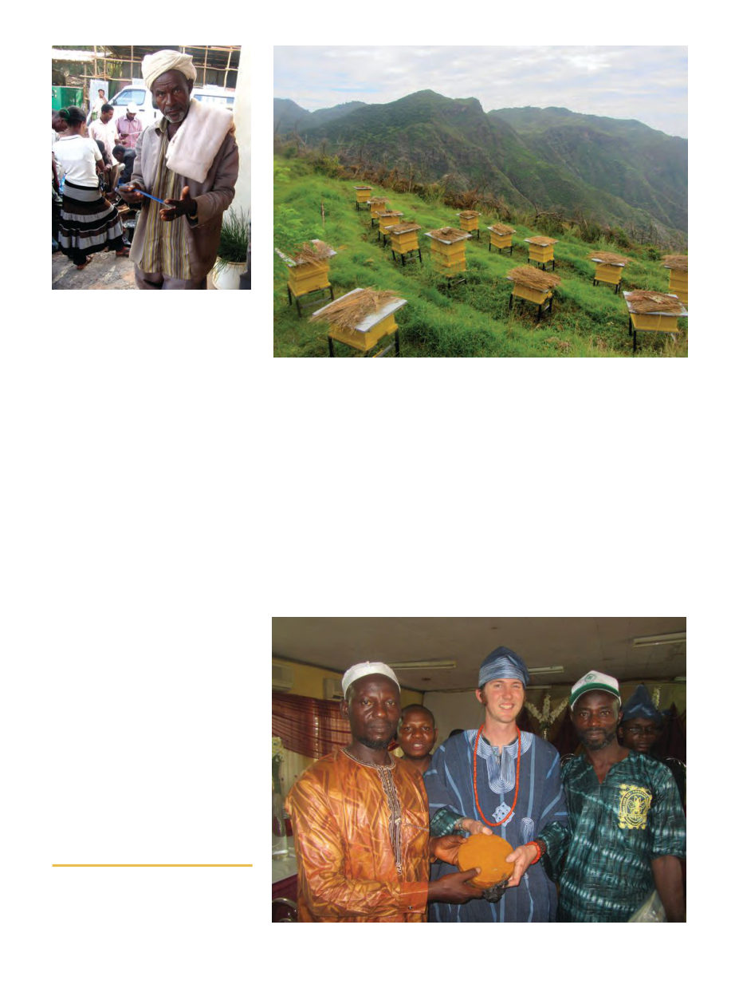

September 2012
885
94% had traditional hives (8.4 of them on
average), only 23% had topbar hives (and
none in Tigray), and a surprising 69% had
frame hives (with an average number of
5.9). Because the builders were not beekeep-
ers (and the beekeepers didn’t know what
wasn’t of acceptable quality either), most of
these frame hives are very badly built – the
spacing is all wrong and the wiring is loose,
leading to cross combing and double-comb-
ing. Additionally, while economies of scale
has reduced the cost of a frame hive to about
$46.40, that is still a huge expense to local
beekeepers.
Ethiopia also seems to have the peculiar
situation of a lack of demand for wax and a
lack of supply of wax. Beekeepers can’t find
buyers, and they also can’t find a source of
foundation. Obviously, there’s a shortage of
foundation presses, but also, while the gov-
ernment used to also make mass orders of
wax and redistribute it as foundation, they
recently found all the samples to be too con-
taminated for use11. Crop farmers apparently
have just enough access to pesticides to
cause trouble12 13 (it’s not well regulated),
and the brief boom in the wax market
quickly led to adulterated wax being sold.
Since they don’t know effective ways to
check the quality of wax against contamina-
tion and adulteration, large scale processors
simply aren’t buying it locally any more.14
In my inspections of the hives the bees
behaved similarly to those in Nigeria (ie
very crawly), and I was most struck by how
badly constructed all their frame hives were.
Though small hive beetles were pervasive in
Nigeria, I didn’t see any in Ethiopia. I did,
however, see bee lice in many of the
Ethiopian hives. They look like slightly
smaller and lighter-colored varroa mites.
Beekeepers were anxious to know if I had
any solutions for the problems of bee-eater
birds and honey badgers, which I didn’t
(though they already knew to keep their
hives elevated off the ground, and against
honey badgers recommend “have a dog”).
In Tigray the beekeepers also claimed to
have an interesting disease problem, to
quote Girmay’s book:
“humedia was ordered second following
drought [as a problem], the farmers ex-
plained humedia could occur in the dry sea-
son and rainy season of the year associated
with cloud occurrence. At times when there
is a red colored cloud, some red to yellowish
colored powder falls down from the sky. The
powder is spread in the vegetations of the
surrounding then bees that are foraging for
pollen and nectar from the vegetation will
be attacked by humedia. The bees with hu-
media will return to the hive and contami-
nate other bees inside the hive. The bees
show wrinkle walking in the entrance of the
hive and fall down15.”
Despite their extensive experience, I still
felt like my trip was useful. They aren’t in
the habit of inspecting their hives regularly
in Ethiopia, so I taught the beekeepers I met
with a lot about what to look for in their
hives and how to interpret what they see.
They also had many interesting questions
about finer points of bee biology and behav-
ior. There were some very entrenched mis-
conceptions, such as, most shockingly, I
couldn’t convince some beekeepers that
smoke doesn’t make bees angry. Even after
I thought I’d thoroughly covered the topic
11 Murutse 2012.
12 Chemicals used include Malathion, Sevin,
DDT, 2-4 D and Aceton (Kerealem 2009).
13 Kerealem 2009.
14 Murutse 2012.
15 Murutse 2012.
Author (center) holds a cake of beeswax.
Mountain apiary in Ethiopia.
One of the training class members
holds one of the hive tools I brought.